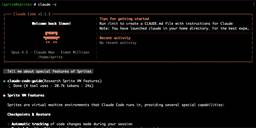

Simon Willison's Weblog
フィード

Quoting Linus Torvalds
Simon Willison's Weblog
<blockquote cite="https://github.com/torvalds/AudioNoise/blob/71b256a7fcb0aa1250625f79838ab71b2b77b9ff/README.md"><p>Also note that the python visualizer tool has been basically written by vibe-coding. I know more about analog filters -- and that's not saying much -- than I do about python. It started out as my typical "google and do the monkey-see-monkey-do" kind of programming, but then I cut out the middle-man -- me -- and just used Google Antigravity to do the audio sample visualizer.</p></blockquote><p class="cite">— <a href="https://github.com/torvalds/AudioNoise/blob/71b256a7fcb0aa1250625f79838ab71b2b77b9ff/README.md">Linus Torvalds</a>, Another silly guitar-pedal-related repo</p> <p>Tags: <a href="https://simonwillison.net/tags/ai">ai</a>, <a href="https://simonwillison.net/tags/vibe-coding">vibe-coding</a>, <a href="https://simonwillison.net/tags/linus-torvalds">linus-torvalds</a>, <a href="https://simonwillison.net/tags/python">python</a>, <a href="https://simonwilliso
9時間前
A Software Library with No Code
Simon Willison's Weblog
<p><strong><a href="https://www.dbreunig.com/2026/01/08/a-software-library-with-no-code.html">A Software Library with No Code</a></strong></p>Provocative experiment from Drew Breunig, who designed a new library for time formatting ("3 hours ago" kind of thing) called "whenwords" that has no code at all, just a carefully written specification, an AGENTS.md and a collection of conformance tests in a YAML file.</p><p>Pass that to your coding agent of choice, tell it what language you need and it will write it for you on demand!</p><p>This meshes nearly with my recent <a href="https://simonwillison.net/2025/Dec/31/the-year-in-llms/#the-year-of-conformance-suites">interest in conformance suites</a>. If you publish good enough language-independent tests it's pretty astonishing how far today's coding agents can take you! <p>Tags: <a href="https://simonwillison.net/tags/testing">testing</a>, <a href="https://simonwillison.net/tags/ai">ai</a>, <a href="https://simonwillison.net/tags/generative
12時間前

Fly's new Sprites.dev addresses both developer sandboxes and API sandboxes at the same time
Simon Willison's Weblog
<p>New from Fly.io today: <a href="https://sprites.dev">Sprites.dev</a>. Here's their <a href="https://fly.io/blog/code-and-let-live/">blog post</a> and <a href="https://www.youtube.com/watch?v=7BfTLlwO4hw">YouTube demo</a>. It's an interesting new product that's quite difficult to explain - Fly call it "Stateful sandbox environments with checkpoint & restore" but I see it as hitting two of my current favorite problems: a safe development environment for running coding agents <em>and</em> an API for running untrusted code in a secure sandbox.</p><p><em>Disclosure: Fly sponsor some of my work. They did not ask me to write about Sprites and I didn't get preview access prior to the launch. My enthusiasm here is genuine.</em></p><ul> <li><a href="https://simonwillison.net/2026/Jan/9/sprites-dev/#developer-sandboxes">Developer sandboxes</a></li> <li><a href="https://simonwillison.net/2026/Jan/9/sprites-dev/#storage-and-checkpoints">Storage and checkpoints</a></li> <li><a href="https://
1日前
LLM predictions for 2026, shared with Oxide and Friends
Simon Willison's Weblog
<p>I joined a recording of the Oxide and Friends podcast on Tuesday to talk about 1, 3 and 6 year predictions for the tech industry. This is my second appearance on their annual predictions episode, you can see <a href="https://simonwillison.net/2025/Jan/10/ai-predictions/">my predictions from January 2025 here</a>. Here's <a href="https://oxide-and-friends.transistor.fm/episodes/predictions-2026">the page for this year's episode</a>, with options to listen in all of your favorite podcast apps or <a href="https://www.youtube.com/watch?v=lVDhQMiAbR8">directly on YouTube</a>.</p><p>Bryan Cantrill started the episode by declaring that he's never been so unsure about what's coming in the next year. I share that uncertainty - the significant advances in coding agents just in the last two months have left me certain that things will change significantly, but unclear as to what those changes will be.</p><p>Here are the predictions I shared in the episode.</p><ul> <li><a href="https://simonwi
3日前
How Google Got Its Groove Back and Edged Ahead of OpenAI
Simon Willison's Weblog
<p><strong><a href="https://www.wsj.com/tech/ai/google-ai-openai-gemini-chatgpt-b766e160">How Google Got Its Groove Back and Edged Ahead of OpenAI</a></strong></p>I picked up a few interesting tidbits from this Wall Street Journal piece on Google's recent hard won success with Gemini.</p><p>Here's the origin of the name "Nano Banana":</p><blockquote><p>Naina Raisinghani, known inside Google for working late into the night, needed a name for the new tool to complete the upload. It was 2:30 a.m., though, and nobody was around. So she just made one up, a mashup of two nicknames friends had given her: Nano Banana.</p></blockquote><p>The WSJ credit OpenAI's Daniel Selsam with un-retiring Sergei Brin:</p><blockquote><p>Around that time, Google co-founder Sergey Brin, who had recently retired, was at a party chatting with a researcher from OpenAI named Daniel Selsam, according to people familiar with the conversation. Why, Selsam asked him, wasn’t he working full time on AI. Hadn’t the launc
3日前
Quoting Adam Wathan
Simon Willison's Weblog
<blockquote cite="https://github.com/tailwindlabs/tailwindcss.com/pull/2388#issuecomment-3717222957"><p>[...] the reality is that 75% of the people on our engineering team lost their jobs here yesterday because of the brutal impact AI has had on our business. And every second I spend trying to do fun free things for the community like this is a second I'm not spending trying to turn the business around and make sure the people who are still here are getting their paychecks every month. [...]</p><p>Traffic to our docs is down about 40% from early 2023 despite Tailwind being more popular than ever. The docs are the only way people find out about our commercial products, and without customers we can't afford to maintain the framework. [...]</p><p>Tailwind is growing faster than it ever has and is bigger than it ever has been, and our revenue is down close to 80%. Right now there's just no correlation between making Tailwind easier to use and making development of the framework more susta
4日前
Quoting Robin Sloan
Simon Willison's Weblog
<blockquote cite="https://www.robinsloan.com/winter-garden/agi-is-here/"><p><strong>AGI is here</strong>! When exactly it arrived, we’ll never know; whether it was one company’s Pro or another company’s Pro Max (Eddie Bauer Edition) that tip-toed first across the line … you may debate. But generality has been achieved, & now we can proceed to new questions. [...]</p><p>The key word in Artificial General Intelligence is General. That’s the word that makes this AI unlike every other AI: because every other AI was trained for a particular purpose. Consider landmark models across the decades: the Mark I Perceptron, LeNet, AlexNet, AlphaGo, AlphaFold … these systems were all different, but all alike in this way.</p><p>Language models were trained for a purpose, too … but, surprise: the mechanism & scale of that training did something new: opened a wormhole, through which a vast field of action & response could be reached. Towering libraries of human writing, drawn together acro
4日前
A field guide to sandboxes for AI
Simon Willison's Weblog
<p><strong><a href="https://www.luiscardoso.dev/blog/sandboxes-for-ai">A field guide to sandboxes for AI</a></strong></p>This guide to the current sandboxing landscape by Luis Cardoso is comprehensive, dense and absolutely fantastic.</p><p>He starts by differentiating between containers (which share the host kernel), microVMs (their own guest kernel behind hardwae virtualization), gVisor userspace kernels and WebAssembly/isolates that constrain everything within a runtime.</p><p>The piece then dives deep into terminology, approaches and the landscape of existing tools.</p><p>I think using the right sandboxes to safely run untrusted code is one of the most important problems to solve in 2026. This guide is an invaluable starting point. <p><small></small>Via <a href="https://lobste.rs/s/l9gkjo/field_guide_sandboxes_for_ai">lobste.rs</a></small></p> <p>Tags: <a href="https://simonwillison.net/tags/sandboxing">sandboxing</a>, <a href="https://simonwillison.net/tags/ai">ai</a>, <a href="ht
5日前
It’s hard to justify Tahoe icons
Simon Willison's Weblog
<p><strong><a href="https://tonsky.me/blog/tahoe-icons/">It’s hard to justify Tahoe icons</a></strong></p>Devastating critique of the new menu icons in macOS Tahoe by Nikita Prokopov, who starts by quoting the 1992 Apple HIG rule to not "overload the user with complex icons" and then provides comprehensive evidence of Tahoe doing exactly that.</p><blockquote><p>In my opinion, Apple took on an impossible task: to add an icon to every menu item. There are just not enough good metaphors to do something like that.</p><p>But even if there were, the premise itself is questionable: if everything has an icon, it doesn’t mean users will find what they are looking for faster.</p><p>And even if the premise was solid, I still wish I could say: they did the best they could, given the goal. But that’s not true either: they did a poor job consistently applying the metaphors and designing the icons themselves.</p></blockquote> <p><small></small>Via <a href="https://news.ycombinator.com/item?id=464977
6日前
Oxide and Friends Predictions 2026, today at 4pm PT
Simon Willison's Weblog
<p><strong><a href="https://discord.com/invite/QrcKGTTPrF">Oxide and Friends Predictions 2026, today at 4pm PT</a></strong></p>I joined the Oxide and Friends podcast <a href="https://simonwillison.net/2025/Jan/10/ai-predictions/">last year</a> to predict the next 1, 3 and 6 years(!) of AI developments. With hindsight I did very badly, but they're inviting me back again anyway to have another go.</p><p>We will be recording live today at 4pm Pacific on their Discord - <a href="https://discord.com/invite/QrcKGTTPrF">you can join that here</a>, and the podcast version will go out shortly afterwards.</p><p>I'll be recording at their office in Emeryville and then heading to <a href="https://www.thecrucible.org/">the Crucible</a> to learn how to make neon signs. <p><small></small>Via <a href="https://bsky.app/profile/bcantrill.bsky.social/post/3mbovdf3h3s24">Bryan Cantrill</a></small></p> <p>Tags: <a href="https://simonwillison.net/tags/podcasts">podcasts</a>, <a href="https://simonwillison.
6日前
The November 2025 inflection point
Simon Willison's Weblog
<p>It genuinely feels to me like GPT-5.2 and Opus 4.5 in November represent an inflection point - one of those moments where the models get incrementally better in a way that tips across an invisible capability line where suddenly a whole bunch of much harder coding problems open up.</p> <p>Tags: <a href="https://simonwillison.net/tags/anthropic">anthropic</a>, <a href="https://simonwillison.net/tags/claude">claude</a>, <a href="https://simonwillison.net/tags/openai">openai</a>, <a href="https://simonwillison.net/tags/ai">ai</a>, <a href="https://simonwillison.net/tags/llms">llms</a>, <a href="https://simonwillison.net/tags/gpt-5">gpt-5</a>, <a href="https://simonwillison.net/tags/ai-assisted-programming">ai-assisted-programming</a>, <a href="https://simonwillison.net/tags/generative-ai">generative-ai</a>, <a href="https://simonwillison.net/tags/claude-4">claude-4</a></p>
6日前
Quoting Addy Osmani
Simon Willison's Weblog
<blockquote cite="https://addyosmani.com/blog/21-lessons/"><p>With enough users, every observable behavior becomes a dependency - regardless of what you promised. Someone is scraping your API, automating your quirks, caching your bugs.</p><p>This creates a career-level insight: you can’t treat compatibility work as “maintenance” and new features as “real work.” Compatibility is product.</p><p>Design your deprecations as migrations with time, tooling, and empathy. Most “API design” is actually “API retirement.”</p></blockquote><p class="cite">— <a href="https://addyosmani.com/blog/21-lessons/">Addy Osmani</a>, 21 lessons from 14 years at Google</p> <p>Tags: <a href="https://simonwillison.net/tags/api-design">api-design</a>, <a href="https://simonwillison.net/tags/addy-osmani">addy-osmani</a>, <a href="https://simonwillison.net/tags/careers">careers</a>, <a href="https://simonwillison.net/tags/google">google</a></p>
7日前
Helping people write code again
Simon Willison's Weblog
<p>Something I like about our weird new LLM-assisted world is the number of people I know who are coding again, having mostly stopped as they moved into management roles or lost their personal side project time to becoming parents.</p><p>AI assistance means you can get something useful done in half an hour, or even while you are doing other stuff. You don't need to carve out 2-4 hours to ramp up anymore.</p><p>If you have significant previous coding experience - even if it's a few years stale - you can drive these things really effectively. Especially if you have management experience, quite a lot of which transfers to "managing" coding agents - communicate clearly, set achievable goals, provide all relevant context. Here's a relevant <a href="https://twitter.com/emollick/status/2007249835465072857">recent tweet</a> from Ethan Mollick:</p><blockquote><p>When you see how people use Claude Code/Codex/etc it becomes clear that managing agents is really a management problem</p><p>Can you
7日前
Quoting Jaana Dogan
Simon Willison's Weblog
<blockquote cite="https://twitter.com/rakyll/status/2007239758158975130"><p>I'm not joking and this isn't funny. We have been trying to build distributed agent orchestrators at Google since last year. There are various options, not everyone is aligned... I gave Claude Code a description of the problem, it generated what we built last year in an hour.</p><p>It's not perfect and I'm iterating on it but this is where we are right now. If you are skeptical of coding agents, try it on a domain you are already an expert of. Build something complex from scratch where you can be the judge of the artifacts.</p><p>[<a href="https://twitter.com/rakyll/status/2007255015069778303">...</a>] It wasn't a very detailed prompt and it contained no real details given I cannot share anything propriety. I was building a toy version on top of some of the existing ideas to evaluate Claude Code. It was a three paragraph description.</p></blockquote><p class="cite">— <a href="https://twitter.com/rakyll/s
7日前
Was Daft Punk Having a Laugh When They Chose the Tempo of Harder, Better, Faster, Stronger?
Simon Willison's Weblog
<p><strong><a href="https://www.madebywindmill.com/tempi/blog/hbfs-bpm/">Was Daft Punk Having a Laugh When They Chose the Tempo of Harder, Better, Faster, Stronger?</a></strong></p>Depending on how you measure it, the tempo of Harder, Better, Faster, Stronger appears to be 123.45 beats per minute.</p><p>This is one of those things that's so cool I'm just going to accept it as true.</p><p>(I only today learned from <a href="https://news.ycombinator.com/item?id=46469577#46470831">the Hacker News comments</a> that Veridis Quo is "Very Disco", and if you flip the order of those words you get Discovery, the name of the album.) <p><small></small>Via <a href="https://kottke.org/26/01/0048114-investigating-a-possible-">Kottke</a></small></p> <p>Tags: <a href="https://simonwillison.net/tags/music">music</a></p>
8日前
Quoting Will Larson
Simon Willison's Weblog
<blockquote cite="https://lethain.com/company-ai-adoption/"><p>My experience is that <em>real</em> AI adoption on <em>real</em> problems is a complex blend of: domain context on the problem, domain experience with AI tooling, and old-fashioned IT issues. I’m deeply skeptical of any initiative for internal AI adoption that doesn’t anchor on all three of those. This is an advantage of earlier stage companies, because you can often find aspects of all three of those in a single person, or at least across two people. In larger companies, you need three different <em>organizations</em> doing this work together, this is just objectively hard</p></blockquote><p class="cite">— <a href="https://lethain.com/company-ai-adoption/">Will Larson</a>, Facilitating AI adoption at Imprint</p> <p>Tags: <a href="https://simonwillison.net/tags/leadership">leadership</a>, <a href="https://simonwillison.net/tags/llms">llms</a>, <a href="https://simonwillison.net/tags/ai">ai</a>, <a href="https://simon
9日前
The most popular blogs of Hacker News in 2025
Simon Willison's Weblog
<p><strong><a href="https://refactoringenglish.com/blog/2025-hn-top-5/">The most popular blogs of Hacker News in 2025</a></strong></p>Michael Lynch maintains <a href="https://refactoringenglish.com/tools/hn-popularity/">HN Popularity Contest</a>, a site that tracks personal blogs on Hacker News and scores them based on how well they perform on that platform.</p><p>The engine behind the project is the <a href="https://github.com/mtlynch/hn-popularity-contest-data/blob/master/data/domains-meta.csv">domain-meta.csv</a> CSV on GiHub, a hand-curated list of known personal blogs with author and bio and tag metadata, which Michael uses to separate out personal blog posts from other types of content.</p><p>I came top of the rankings in 2023, 2024 and 2025 but I'm listed <a href="https://refactoringenglish.com/tools/hn-popularity/">in third place</a> for all time behind Paul Graham and Brian Krebs.</p><p>I dug around in the browser inspector and was delighted to find that the data powering the
9日前
December 2025 sponsors-only newsletter
Simon Willison's Weblog
<p>I sent the December edition of my <a href="https://github.com/sponsors/simonw/">sponsors-only monthly newsletter</a>. If you are a sponsor (or if you start a sponsorship now) you can <a href="https://github.com/simonw-private/monthly/blob/main/2025-12-december.md">access a copy here</a>. In the newsletter this month:</p><ul><li>An in-depth review of LLMs in 2025</li><li>My coding agent projects in December</li><li>New models for December 2025</li><li>Skills are an open standard now</li><li>Claude's "Soul Document"</li><li>Tools I'm using at the moment</li></ul><p>Here's <a href="https://gist.github.com/simonw/fc34b780a9ae19b6be5d732078a572c8">a copy of the November newsletter</a> as a preview of what you'll get. Pay $10/month to stay a month ahead of the free copy!</p> <p>Tags: <a href="https://simonwillison.net/tags/newsletter">newsletter</a></p>
9日前
Quoting Ben Werdmuller
Simon Willison's Weblog
<blockquote cite="https://werd.io/2025-the-year-in-llms/"><p>[Claude Code] has the potential to transform all of tech. I also think we’re going to see a real split in the tech industry (and everywhere code is written) between people who are <em>outcome-driven</em> and are excited to get to the part where they can test their work with users faster, and people who are <em>process-driven</em> and get their meaning from the engineering itself and are upset about having that taken away.</p></blockquote><p class="cite">— <a href="https://werd.io/2025-the-year-in-llms/">Ben Werdmuller</a></p> <p>Tags: <a href="https://simonwillison.net/tags/coding-agents">coding-agents</a>, <a href="https://simonwillison.net/tags/ai-assisted-programming">ai-assisted-programming</a>, <a href="https://simonwillison.net/tags/claude-code">claude-code</a>, <a href="https://simonwillison.net/tags/generative-ai">generative-ai</a>, <a href="https://simonwillison.net/tags/ai">ai</a>, <a href="https://simonwilli
9日前
Introducing gisthost.github.io
Simon Willison's Weblog
<p>I am a huge fan of <a href="https://gistpreview.github.io/">gistpreview.github.io</a>, the site by Leon Huang that lets you append <code>?GIST_id</code> to see a browser-rendered version of an HTML page that you have saved to a Gist. The last commit was ten years ago and I needed a couple of small changes so I've forked it and deployed an updated version at <a href="https://gisthost.github.io/">gisthost.github.io</a>.</p><h4 id="some-background-on-gistpreview">Some background on gistpreview</h4><p>The genius thing about <code>gistpreview.github.io</code> is that it's a core piece of GitHub infrastructure, hosted and cost-covered entirely by GitHub, that wasn't built with any involvement from GitHub at all.</p><p>To understand how it works we need to first talk about Gists.</p><p>Any file hosted in a <a href="https://gist.github.com/">GitHub Gist</a> can be accessed via a direct URL that looks like this:</p><p><code>https://gist.githubusercontent.com/simonw/d168778e8e62f65886000f3f3
10日前
2025: The year in LLMs
Simon Willison's Weblog
<p>This is the third in my annual series reviewing everything that happened in the LLM space over the past 12 months. For previous years see <a href="https://simonwillison.net/2023/Dec/31/ai-in-2023/">Stuff we figured out about AI in 2023</a> and <a href="https://simonwillison.net/2024/Dec/31/llms-in-2024/">Things we learned about LLMs in 2024</a>.</p><p>It’s been a year filled with a <em>lot</em> of different trends.</p><ul> <li><a href="https://simonwillison.net/2025/Dec/31/the-year-in-llms/#the-year-of-reasoning-">The year of "reasoning"</a></li> <li><a href="https://simonwillison.net/2025/Dec/31/the-year-in-llms/#the-year-of-agents">The year of agents</a></li> <li><a href="https://simonwillison.net/2025/Dec/31/the-year-in-llms/#the-year-of-coding-agents-and-claude-code">The year of coding agents and Claude Code</a></li> <li><a href="https://simonwillison.net/2025/Dec/31/the-year-in-llms/#the-year-of-llms-on-the-command-line">The year of LLMs on the command-line</a></li> <li><a hre
10日前
Codex cloud is now called Codex web
Simon Willison's Weblog
<p><strong><a href="https://developers.openai.com/codex/cloud/">Codex cloud is now called Codex web</a></strong></p>It looks like OpenAI's <strong>Codex cloud</strong> (the cloud version of their Codex coding agent) was quietly rebranded to <strong>Codex web</strong> at some point in the last few days.</p><p>Here's a screenshot of the Internet Archive copy from <a href="https://web.archive.org/web/20251218043013/https://developers.openai.com/codex/cloud/">18th December</a> (the <a href="https://web.archive.org/web/20251228124455/https://developers.openai.com/codex/cloud/">capture on the 28th</a> maintains that Codex cloud title but did not fully load CSS for me):</p><p><img alt="Screenshot of the Codex cloud documentation page" src="https://static.simonwillison.net/static/2025/codex-cloud.jpg" /></p><p>And here's that same page today with the updated product name:</p><p><img alt="Same documentation page only now it says Codex web" src="https://static.simonwillison.net/static/2025/code
11日前
Quoting Armin Ronacher
Simon Willison's Weblog
<blockquote cite="https://lobste.rs/c/xccjtq"><p>[...] The puzzle is still there. What’s gone is the labor. I never enjoyed hitting keys, writing minimal repro cases with little insight, digging through debug logs, or trying to decipher some obscure AWS IAM permission error. That work wasn’t the puzzle for me. It was just friction, laborious and frustrating. The thinking remains; the hitting of the keys and the frustrating is what’s been removed.</p></blockquote><p class="cite">— <a href="https://lobste.rs/c/xccjtq">Armin Ronacher</a></p> <p>Tags: <a href="https://simonwillison.net/tags/ai-assisted-programming">ai-assisted-programming</a>, <a href="https://simonwillison.net/tags/generative-ai">generative-ai</a>, <a href="https://simonwillison.net/tags/armin-ronacher">armin-ronacher</a>, <a href="https://simonwillison.net/tags/ai">ai</a>, <a href="https://simonwillison.net/tags/llms">llms</a></p>
11日前
TIL: Downloading archived Git repositories from archive.softwareheritage.org
Simon Willison's Weblog
<p><strong><a href="https://til.simonwillison.net/github/software-archive-recovery">TIL: Downloading archived Git repositories from archive.softwareheritage.org</a></strong></p>Back in February I <a href="https://simonwillison.net/2025/Feb/7/sqlite-s3vfs/">blogged about</a> a neat Python library called <code>sqlite-s3vfs</code> for accessing SQLite databases hosted in an S3 bucket, released as MIT licensed open source by the UK government's Department for Business and Trade.</p><p>I went looking for it today and found that the <a href="https://github.com/uktrade/sqlite-s3vfs">github.com/uktrade/sqlite-s3vfs</a> repository is now a 404.</p><p>Since this is taxpayer-funded open source software I saw it as my moral duty to try and restore access! It turns out <a href="https://archive.softwareheritage.org/browse/origin/directory/?origin_url=https://github.com/uktrade/sqlite-s3vfs">a full copy</a> had been captured by <a href="https://archive.softwareheritage.org/">the Software Heritage ar
11日前
Quoting Liz Fong-Jones
Simon Willison's Weblog
<blockquote cite="https://bsky.app/profile/lizthegrey.com/post/3mb65fnjiis25"><p>In essence a language model changes you from a programmer who writes lines of code, to a programmer that manages the context the model has access to, prunes irrelevant things, adds useful material to context, and writes detailed specifications. If that doesn't sound fun to you, you won't enjoy it.</p><p>Think about it as if it is a junior developer that has read every textbook in the world but has 0 practical experience with your specific codebase, and is prone to forgetting anything but the most recent hour of things you've told it. What do you want to tell that intern to help them progress?</p><p>Eg you might put sticky notes on their desk to remind them of where your style guide lives, what the API documentation is for the APIs you use, some checklists of what is done and what is left to do, etc.</p><p>But the intern gets confused easily if it keeps accumulating sticky notes and there are now 100 stick
12日前
shot-scraper 1.9
Simon Willison's Weblog
<p><strong><a href="https://github.com/simonw/shot-scraper/releases/tag/1.9">shot-scraper 1.9</a></strong></p>New release of my <a href="https://shot-scraper.datasette.io/">shot-scraper</a> CLI tool for taking screenshots and scraping websites with JavaScript from the terminal.</p><blockquote><ul><li>The <code>shot-scraper har</code> command has a new <code>-x/--extract</code> option which extracts all of the resources loaded by the page out to a set of files. This location can be controlled by the <code>-o dir/</code> option. <a href="https://github.com/simonw/shot-scraper/issues/184">#184</a></li><li>Fixed the <code>shot-scraper accessibility</code> command for compatibility with the latest Playwright. <a href="https://github.com/simonw/shot-scraper/issues/185">#185</a></li></ul></blockquote><p>The new <code>shot-scraper har -x https://simonwillison.net/</code> command is really neat. The inspiration was <a href="https://simonwillison.net/2025/Dec/26/slop-acts-of-kindness/#digital-f
13日前
Quoting D. Richard Hipp
Simon Willison's Weblog
<blockquote cite="https://sigmodrecord.org/publications/sigmodRecord/1906/pdfs/06_Profiles_Hipp.pdf"><p>But once we got that and got this aviation grade testing in place, the number of bugs just dropped to a trickle. Now we still do have bugs but the aviation grade testing allows us to move fast, which is important because in this business you either move fast or you're disrupted. So, we're able to make major changes to the structure of the code that we deliver and be confident that we're not breaking things because we had these intense tests. Probably half the time we spend is actually writing new tests, we're constantly writing new tests. And over the 17-year history, we have amassed a huge suite of tests which we run constantly.</p><p>Other database engines don't do this; don't have thislevel of testing. But they're still high quality, I mean, Inoticed in particular, PostgreSQL is a very high-quality database engine, they don't have many bugs. I went to the PostgreSQL and ask them
13日前
Quoting Jason Gorman
Simon Willison's Weblog
<blockquote cite="https://codemanship.wordpress.com/2025/11/25/the-future-of-software-development-is-software-developers/"><p>The hard part of computer programming isn't expressing what we want the machine to do in code. The hard part is turning human thinking -- with all its wooliness and ambiguity and contradictions -- into <em>computational thinking</em> that is logically precise and unambiguous, and that can then be expressed formally in the syntax of a programming language.</p><p>That was the hard part when programmers were punching holes in cards. It was the hard part when they were typing COBOL code. It was the hard part when they were bringing Visual Basic GUIs to life (presumably to track the killer's IP address). And it's the hard part when they're prompting language models to predict plausible-looking Python.</p><p>The hard part has always been – and likely will continue to be for many years to come – knowing <em>exactly</em> what to ask for.</p></blockquote><p class="cite"
13日前
Copyright Release for Contributions To SQLite
Simon Willison's Weblog
<p><strong><a href="https://www.sqlite.org/copyright-release.html">Copyright Release for Contributions To SQLite</a></strong></p>D. Richard Hipp <a href="https://news.ycombinator.com/item?id=46420453#46424225">called me out</a> for spreading misinformation on Hacker News that SQLite refuses outside contributions:</p><blockquote><p>No, Simon, we don't "refuse". We are just very selective and there is a lot of paperwork involved to confirm the contribution is in the public domain and does not contaminate the SQLite core with licensed code.</p></blockquote><p>I deeply regret this error! I'm linking to the copyright release document here - it looks like SQLite's public domain nature makes this kind of clause extremely important:</p><blockquote><p>[...] To the best of my knowledge and belief, the changes and enhancements that I have contributed to SQLite are either originally written by me or are derived from prior works which I have verified are also in the public domain and are not subje
13日前
Quoting Aaron Levie
Simon Willison's Weblog
<blockquote cite="https://twitter.com/levie/status/2004654686629163154"><p>Jevons paradox is coming to knowledge work. By making it far cheaper to take on any type of task that we can possibly imagine, we’re ultimately going to be doing far more. The vast majority of AI tokens in the future will be used on things we don't even do today as workers: they will be used on the software projects that wouldn't have been started, the contracts that wouldn't have been reviewed, the medical research that wouldn't have been discovered, and the marketing campaign that wouldn't have been launched otherwise.</p></blockquote><p class="cite">— <a href="https://twitter.com/levie/status/2004654686629163154">Aaron Levie</a>, Jevons Paradox for Knowledge Work</p> <p>Tags: <a href="https://simonwillison.net/tags/ai-ethics">ai-ethics</a>, <a href="https://simonwillison.net/tags/careers">careers</a>, <a href="https://simonwillison.net/tags/ai">ai</a>, <a href="https://simonwillison.net/tags/llms">llms
13日前